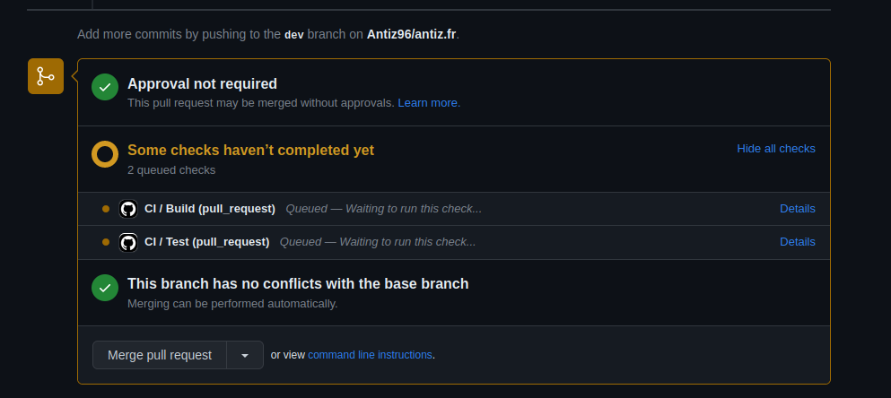
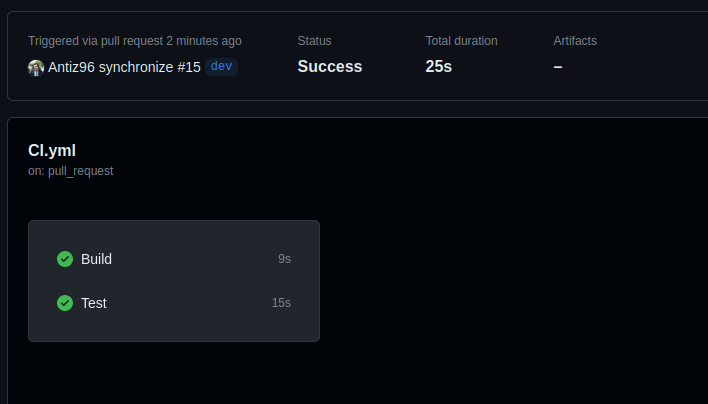
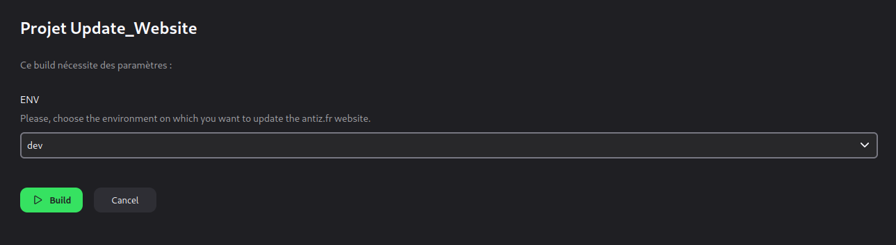
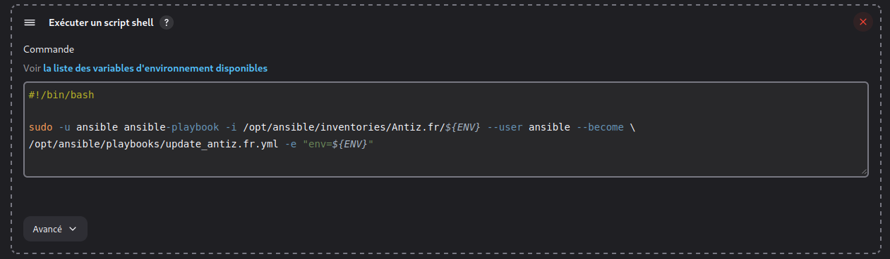
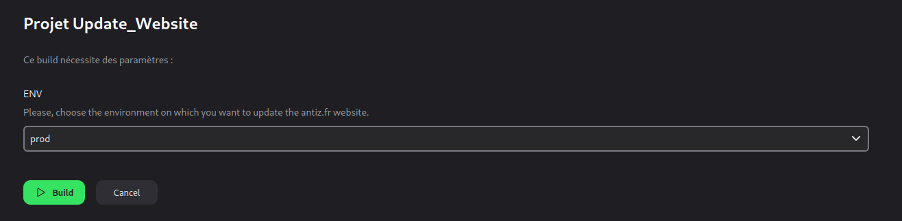

The Automated Workflow I Use to Manage This Website
The website
This website is built with the HUGO static website generator using the anatole theme.
The website’s source code is hosted in this GitHub repository.
Automated workflow
To manage this website, I use an automated workflow based upon CI/CD (Continuous Integration/Continuous Delivery).
CI
I make my changes (creating an article, update the theme, add new parameters to the website, etc…) locally on my computer inside the git repository in the dev branch.
Once the changes are done, I push them to the GitHub repository and I create a merge request from the dev branch to the main one, which triggers a CI pipeline:

This CI pipeline is divided into two jobs:

- The build job:
The build job spawns an Alpine Linux container which automatically builds the website against the new changes I made via the hugo command and, if the build succeeded, automatically pushes the built website to the dev branch (and thus, add it to the current merge request). See a run of the build job here.
- The test job:
The test job spawns an Alpine Linux container which automatically runs a bunch of tests/linters against the relevant files of the repository, to make sure the changes I made are correctly written/syntaxed. See a run of the test job here.
CD
Once both of the above CI jobs succeeded (meaning the website has been successfully built and pushed to the dev branch of the repository, and the tests went through without any error), I launch a job on my Jenkins server targeting the dev branch:

This Jenkins job runs a simple Ansible playbook under the hood (see that playbook here) that aims to update the website’s sources on the environment targeted by the Jenkins job against the related GitHub branch (dev branch –> development environment, main branch –> production environment):

I can then review what my changes look like on my development environment (which is identical to my production environment so I’m guaranteed that what I’m seeing on my development environment is exactly what it will look like once pushed to my production environment).
Once the changes have been reviewed and declared “ready” to go to production, the only thing I need to do is to merge the changes to the main branch on the GitHub repository (by “accepting” the pending merge request) and relaunch my Jenkins job, targeting the “prod” environment this time, so the changes are pushed against the main branch to the VPS which hosts this website:

This workflow aims to evolve and be improved over time but it’s a good example of a simple; yet effective, flexible and reliable; automated workflow with CI/CD you can use to manage your projects! 😁